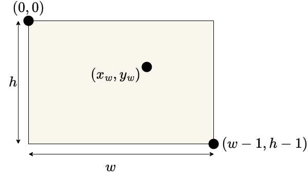

李懿
医学技术与信息工程学院
浙江中医药大学
将绘制区坐标转换为裁剪区坐标(正则化)

// add a vertex to GPU for each click
canvas.addEventListener("click", function(){
gl.bindBuffer(gl.ARRAY_BUFFER, vBuffer);
var t=vec2(-1+2*event.clientX/canvas.width,
-1+2*(canvas.height-event.clientY)/canvas.height);
gl.bufferSubData(gl.ARRAY_BUFFER,sizeof['vec2']*index,t);
index++;
});
鼠标按下位置绘制矩形点
鼠标移动连续绘制矩形点
连续按下鼠标键绘制三角形
两次点击绘制矩形
多次点击绘制多边形
window.onresize=function(){
var min=innerWidth;
if(innerHeight<min){
min=innerHeight;
}
if(min<canvas.width||min<canvas.height){
gl.viewport(0, canvas.height-min, min, min);
}
};